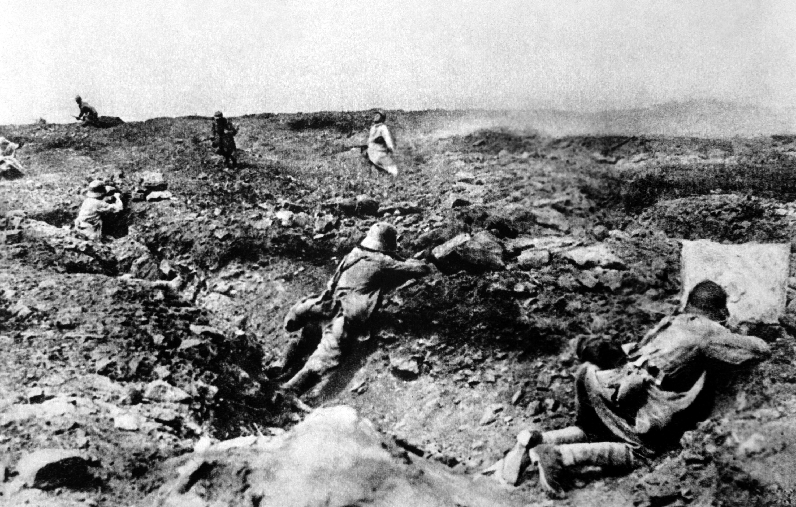

HISTORIANDO
HISTORIANDO

-> A Crise de 1929
A crise ecônomica de 1929, conhecida como "A Crise de 1929", ou ainda "A Grande Depressão", foi sem dúvida a pior crise da história do capitalismo. Os Estados Unidos que já dispontavam como uma potência antes da Primeira Guerra Mundial, acabou se consolidando como a principal potência do planeta após a guerra. Logo as indústrias e o comércio americano fluiam a todo vapor no período pós guerra, os chamados "Anos 20", foram muito prósperos, tudo era festa em solo americano até o dia 24 de outubro de 1929, quando a Bolsa de Valores de Nova Iorque quebrou, levando toda ecônomia americana para o buraco, mergulhando o paíse em uma terrível crise financeira. Grande parte da população americana perdeu tudo o que tinha em 1929, casas, automóveis, empregos, realmente perderam tudo do dia do dia para a noite. Esse período ficou conhecido como um período negro na história do capitalismo e é até nos dias de hoje a pior crise financeira de todos os tempos.
-> Período Pós Guerra (1919-1929)
O intervalo de 10 anos que se estende de 1919 à 1929 é conhecido como um dos períodos mais prósperos da economia americana, os Estados Unidos, que vinham crescendo muito antes da Primeira Guerra Mundial, acabaram se tornando um potência após a guerra, isto se deve ao fato de:
-> Conflitos na Europa: O fato do palco da Primeira Guerra Mundial ter sido a Europa beneficiou os Estados Unidos, uma vez que não sofreu perdas materiais.
-> Fornecimento de suprimentos à Tríplice Entente: Nos primeiros anos da guerra os EUA forneceram quantidades monstruosas de suprimentos à Tríplice Entente, o que acarretou em uma dívida enorme de países da Entente, em especial França e Inglaterra, com os americanos.
-> Desenvolvimento Industrial: Como os EUA fornceram muitos suprimentos para à guerra, as indutrias americanas acabaram se desenvolvendo muito, tornando-se mais produtivas, mais eficientes, gerando um lucro muito maior.
-> A crise
Foi nesse período de 10 anos que surgiu o termo "American Way Of Life", ou ainda "O Estilo de Vida Americano", de fato os anos 20 foram sem dúvida um dos períodos de maior prosperidade da economia americana, nessa década que ficou conhecida como "Os Loucos Anos 20", indústrias criavam e produziam cada dia mais produtos, consumidores compravam de tudo, inclusive ações, no setor agrícola os EUA se destacavam como maior produtor mundial de milho e trigo, além de ser o maior produtor de aço, petróleo, carvão. Nesse período o cinema americano passou por uma grande revolução, as salas de cinema viviam lotadas, e cada dia a indústria cinematográfica produzia mais e mais filmes.
Esse período de euforia e prosperidade durou até o dia 24 de outubro de 1929, o dia que ficou históricamente conhecido como "Quinta-Feira Negra", quando o The Wall Street Journal estampava em suas manchetes a quebra da Bolsa de Valores de Nova Iorque, deixando a economia americana em ruínas. Mas para entender a crise de 1929, precisamos entender os fatores que influenciaram diretamente na ecomonia dos EUA:
-> Superprodução Agrícola: Principalmente de trigo, que não encontrava consumidores interna ou externamente.
-> Livre Comércio: Os empresários faziam praticamente o que queriam não havendo intromissão do governo ou de qualquer outro órgão gorvernamental.
-> Quebra da Bolsa de NY: O mercado de ações à tempos viva aquecido, e de repente o valor das ações começou a cair, o que levou os acionistas à venderem suas ações, o que acabou derrubando ainda mais o valor das mesmas e acarretou na quebra da Bolsa de Nova Iorque no dia 29 de outubro de 1929, a chamada "Quinta-Feira Negra".
-> Diminuição do Consumo: O poder industrial dos EUA cresceu muito, embora o poder aquisitivo dos consumidores também tivesse aumentado, ele não foi capaz de acompanhar o crescimento das empresas, logo havia muitos produtos mercado com poucos consumidores para adquiri-los.
-> O New Deal
Nos anos seguintes a crise se agravou, foi somente em 1933, quando Roosevelt foi eleito como novo presidente dos EUA, de imediatos o novo presidente elaborou um plano de medidas para contornar a crise, o chamado "New Deal". Entre os principais pontos do New Deal podemos destacar:
-> Fiscalização do comércio: O governo passou a controlar o mercado, tendo influência direta em diversos tipos de mercado principalmente o de ações.
-> Programa de Obras Públicas: Outra medida foi um gigantesco programa de obras públicas, gerando empregos e consequentemente injetando capital de giro no mercado consumidor, aquecendo a economia.
-> Controle da produção agrícola: Para evitar o excesso de produção o governo passou a comprar o excedente e simplesmente queimá-lo(medida adotada também no Brasil para eliminar o excesso de café no mercado). Outra medida de controle adotada pelo governo americano foi pagar para os produtores rurais não produzirem. Essas medidas apesar de muito polêmicas se mostraram eficientes. medida de controle
-> Consequências
-> Efeitos diretos da quebra da Bolsa de NY A quebra da Bolsa de NY foi o principal fator da crise, e seus efeitos foram imediatos e em cadeia. Com as ações em baixa, os empresários naturalmente tem um certo receio em investir nas empresas, logo as mesmas passam a produzir menos, gerando menos empregos, colocando menos capital de giro no mercado. Muitas empresas não sobreviveram à crise, e acabaram decrante falência e levanram consigo alguns bancos, que emprestaram dinheiro à essas empresas e não tiveram o retorno monetário.
-> Efeitos da crise no mundo
O colapso da economia americana ocasionou um efeito cascata na economia de muitos países, uma vez que os Estados Unidos representavam o pilar do capitalismo mundial. Logo após a quebra da Bolsa de Nova Iorque, as bolsas de Londres, Berlim e Tóquio também quebraram. Além disso os Estados Unidos era um dos maiores importadores do mundo, com a crise o paíse deixou de importar mercadorias, assim países que exportavam para os EUA tinham um excesso de mercadoria e automaticamente entravam em crise(caso do Brasil, que em 1929 era maior exportador de café do mundo, onde grande parte da produção era destinada aos EUA)
-> Galeria de Fotos
|  | ||